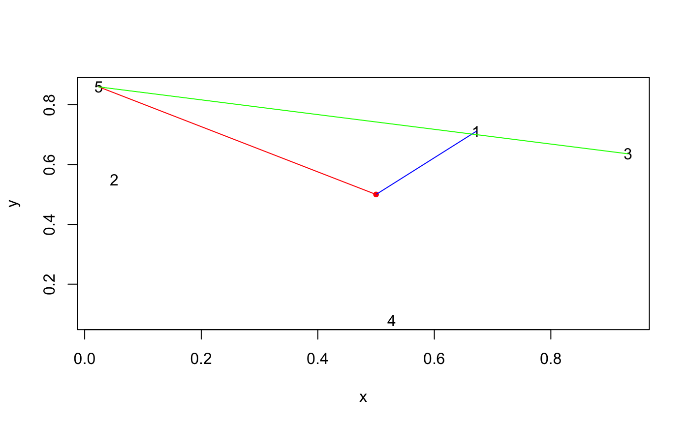

euclidean.RdA little tribe to help with euclidean distances calculations
ed(x, y) edi(x, y, r = 0.5) ed_pw(x, y) ed_nearest(x, y) ed_furthest(x, y) ed_calliper(x) ed_minrad(x)
| x, y | coo_single, matrices or vectors of length 2 (when sensible) |
|---|---|
| r |
|
ed: calculates euclidean distance between two points
edi: calculates intermediate position between two points
ed_pw: calculates pairwise distances between two shapes
ed_nearest: calculates closest point to y from x
ed_furthest: calculates furthest point to y from x
ed_calliper: find calliper (max pairwise ed) length
ed_minrad: find minimal radius (min dist to centroid)
Other geometry:
geometry
#> [1] 1.414214edi(x, y, 0.25) # c(0.25, 0.25)#> [1] 0.25 0.25#> [1] 30.52868 20.59126 16.27882 13.03840 18.43909 12.52996 63.06346 73.05477 #> [9] 78.23043 96.76776 77.36924 45.45327#> [1] 30.52868 20.59126 16.27882 13.03840 18.43909 12.52996 63.06346 73.05477 #> [9] 78.23043 96.76776 77.36924 45.45327#> $d #> [1] 74.20243 #> #> $ids #> x30 #> 30 #># nearest and furthest points set.seed(2329) # for the sake of reproducibility when building the pkg foo <- tibble::tibble(x=runif(5), y=runif(5)) z <- c(0.5, 0.5) plot(foo, pch="")(nearest <- ed_nearest(foo, z))#> $d #> [1] 0.2719217 #> #> $ids #> x1 #> 1 #>(furthest <- ed_furthest(foo, z))#> $d #> [1] 0.5968936 #> #> $ids #> x5 #> 5 #>(calli <- ed_calliper(foo))#> $d #> [1] 0.9358646 #> #> $ids #> [1] 3 5 #>segments(as.numeric(foo[calli$ids[1], 1]), as.numeric(foo[calli$ids[1], 2]), as.numeric(foo[calli$ids[2], 1]), as.numeric(foo[calli$ids[2], 2]), col="green")